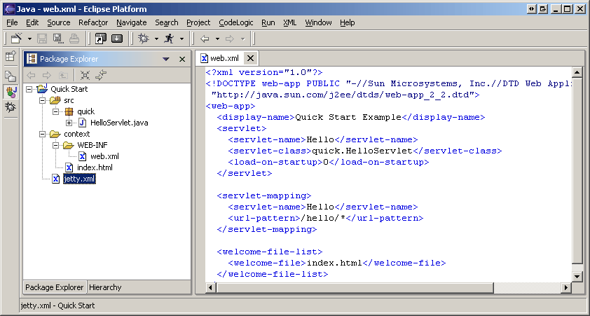
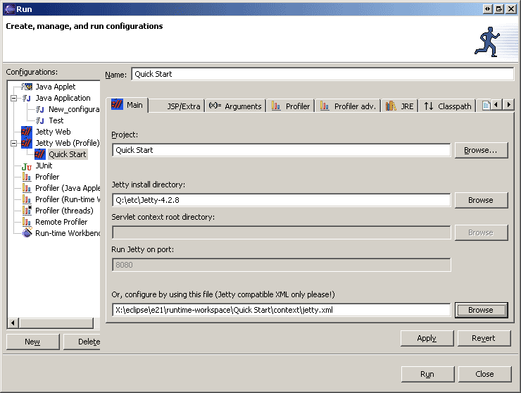
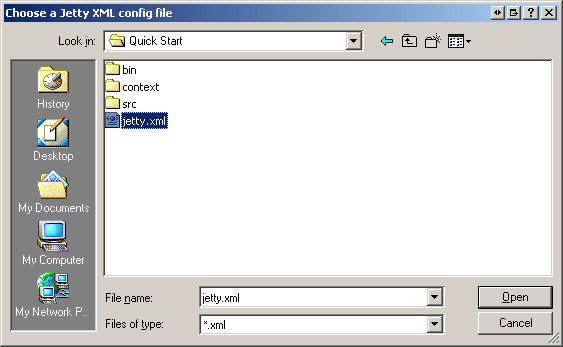

The quick start method is very simple, it just gets things up and going with a very dumb default configuration for Jetty. If one needs more control, one can specify the location of an xml file that the plugin will pass to Jetty.
Note though, that the context and port fields in the launch tabs are disabled if an xml file is chosen.

To do this, bring up a Jetty Web launch configuration:

Make sure that at least the "Jetty install directory" is filled out. Click the "Browse" button next to the "Or, configure by using this file" field:

and now just click "Run"
see also Launch Working Directory